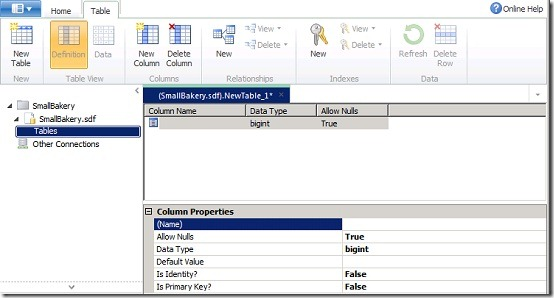
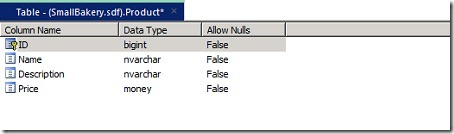

From http://www.w3schools.com (Copyright Refsnes Data)
With Razor, you can easily display data from a database in your web pages.
Razor Example
Run example » |
You can create a database using programming code, but it is more typical (and easier) to use a design tool.
An SQL Server Compact Database design tool is included in WebMatrix.
Follow the instructions below to create an SQL database called "SmallBakery"
1. Create a new web site (In WebMatrix click "Site From Template"), and call the site "SmallBakery"
2. Create a new database (open the Databases workspace and click New Database).
3. WebMatrix will create a database with the same name as your site: "SmallBakery.sdf".
4. Create a new table in the database (open the SmallBakery.sdf node and click New Table).
WebMatrix opens the table designer:

5. Create a new column called "Id". Set Is Identity and Is Primary Key to true.
Is Primary Key tells the database that this will be the table's primary key. Is Identity tells the database to automatically create an ID number for every new record and to assign it the next sequential number (starting at 1).
6. Create a column called "Name". Set Allows Null to "False" and Data Type to "nvarchar".
7. Create a column called "Description". Set Allows Null to "False" and Data Type to "nvarchar".
8. Create a column named "Price". Set Allow Nulls to "False" and set Data Type to "money".
9. Save the table and name it "Product".
When you are finished, your table definition will look like this:

Notes:
Allow Nulls = "False" specifies that the column cannot be blank (empty).
Data
Type = "nvarchar" specifies that this column will be a string of variable
length.
(The n prefix indicates that the column can hold national Unicode data)
Follow the instructions below to add some data to your:
1. In the left pane, expand the SmallBakery.sdf node and then click Tables.
2. Right-click the Product table and then click Data.
3. In the edit pane, enter the following records:
| Name | Description | Price |
|---|---|---|
| Bread | Baked fresh every day | 2.99 |
| Strawberry Cake | Made with organic strawberries | 9.99 |
| Apple Pie | Second only to your mom's pie | 12.99 |
| Pecan Pie | If you like pecans, this is for you | 10.99 |
| Lemon Pie | Made with the best lemons in the world | 11.99 |
| Cupcakes | Your kids will love these | 7.99 |
Follow the instructions below to create a test page for your database:
1. Create a new web page (Open the Files workspace and click "Create a new file").
2. Name the file ListProducts.cshtml.
3. Replace the existing code with the code from the example above.
4. Run your first database web page (Click "Run")
From http://www.w3schools.com (Copyright Refsnes Data)